DFT · COMPUTATIONAL MATERIALS · CAPSTONE 2026
A closer look
at PdSe₂.
Small changes at the edge. Different electronic predictions.
I studied how van der Waals corrections affect the calculated electronic properties of pentagonal PdSe₂ nanoribbons. The project moves from four hydrogen-passivated edge families to fluorine and hydroxyl substitutions, comparing structures, band gaps and density of states.
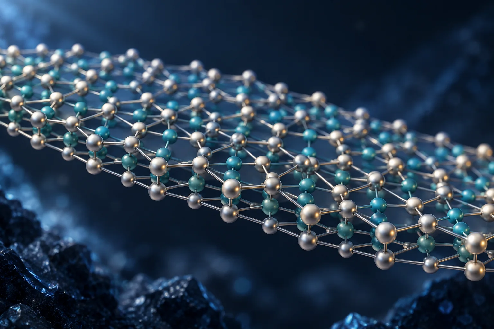
01 / THE RESEARCH QUESTION
What changes when the edge chemistry changes?
The study asks whether dispersion corrections have a similar influence on pristine and chemically modified nanoribbons. I first established hydrogen-passivated reference structures, then introduced F or OH at central and lateral sites of the AA ribbon.
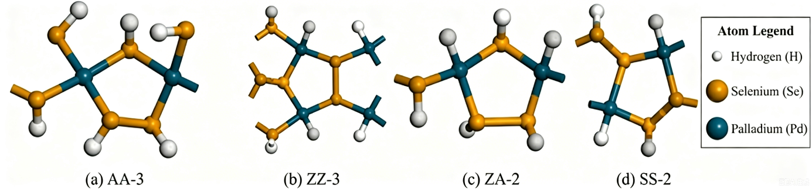
A common reference
The baseline models use hydrogen to terminate the ribbon edges. The thesis reports a vacuum region greater than 15 Å along the non-periodic directions to separate periodic images.
A controlled set of modifications
Selected hydrogen terminations are replaced by fluorine or hydroxyl groups. Comparing the same two groups at two site types gives four functionalised configurations for the PBE–Grimme study.
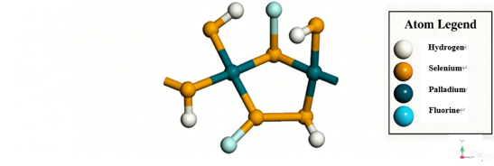
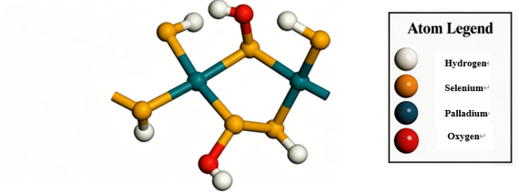
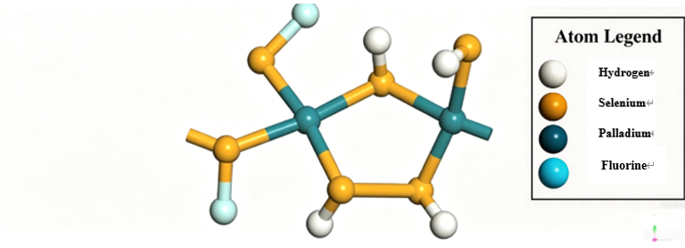
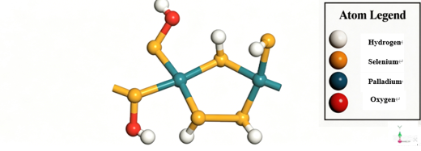
Modified model images extracted from presentation slide 13; matched to thesis Figures 3.2–3.5 by atom type and substitution site.
02 / COMPUTATIONAL WORKFLOW
Build. Relax. Compare.
I used CASTEP in Materials Studio to connect atomic models with their electronic outputs. The pristine comparison covers PBE, Grimme and TS; the functionalised results below compare PBE with Grimme.
- 01
Construct the ribbons
Build four edge families, passivate their boundaries and add vacuum separation. Create the central and lateral F/OH variants from the AA reference.
- 02
Optimise the geometry
Relax each model with the chosen treatment of dispersion, using BFGS geometry optimisation and the reported convergence criteria.
- 03
Inspect the electronic output
Calculate band structures and density of states, compare the gap values, and inspect the influence of broadening on the DOS plots.
SoftwareMaterials Studio 2017 R2 / CASTEP
Exchange–correlationGGA–PBE
Plane-wave cutoff500 eV
PseudopotentialsOTFG ultrasoft
Geometry energy tolerance5 × 10⁻⁶ eV/atom
Maximum force tolerance0.01 eV/Å
Displacement tolerance5 × 10⁻⁴ Å
Stress tolerance0.02 GPa
Reported settings from thesis Chapter 3 and presentation slide 8. “Grimme” follows the software label shown in the presentation; the page does not infer a specific DFT-D version from that label.
03 / PRISTINE BASELINE
A small gap difference in the AA reference.
For the hydrogen-passivated AA-3 example, the presentation reports a PBE gap of 0.587 eV and a Grimme gap of 0.581 eV. Their absolute difference is 0.006 eV, or 6 meV.
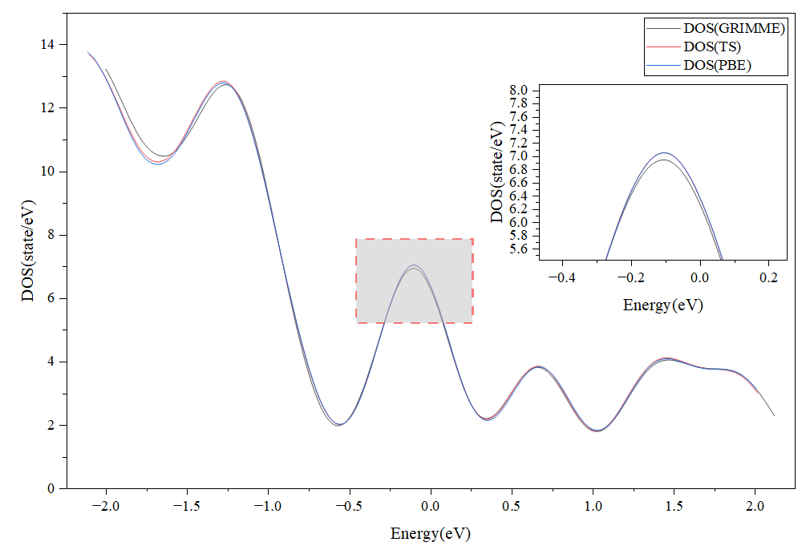
Inspect the original AA-3 band-structure outputs
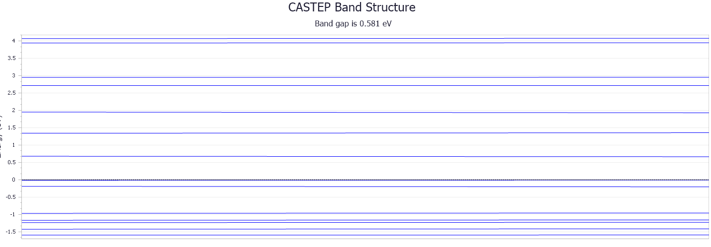
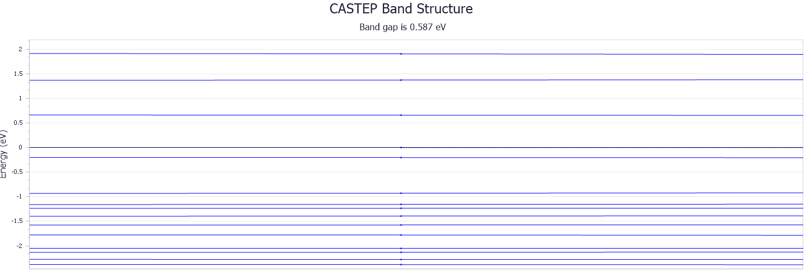
04 / F & OH MODIFICATIONS
A stronger dependence on the calculation method.
For the four functionalised structures, the reported Grimme gaps lie between 0.870 and 0.907 eV. The corresponding PBE values span 0.015 to 0.470 eV. This contrast with the pristine AA example is the central result of the project.
| Modification | PBE | Grimme | Δ gap |
|---|---|---|---|
| Central F | 0.015 | 0.870 | +0.855 |
| Central OH | 0.470 | 0.880 | +0.410 |
| Lateral F | 0.037 | 0.907 | +0.870 |
| Lateral OH | 0.048 | 0.870 | +0.822 |
Inside the original results
Each figure pairs band structures on the left with DOS on the right. Panels (a–b) use Grimme; panels (c–d) use PBE. Select an image to inspect the original plot.
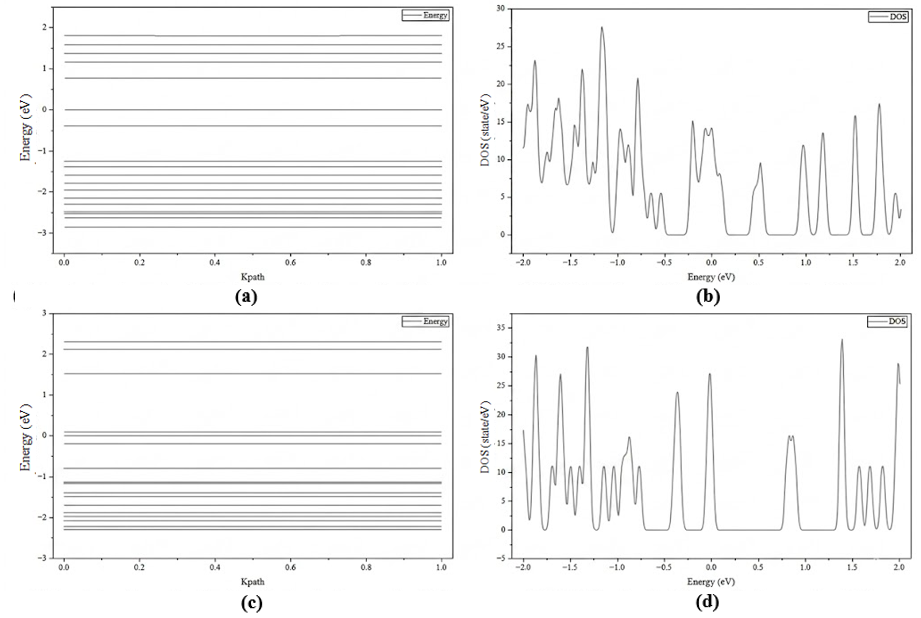
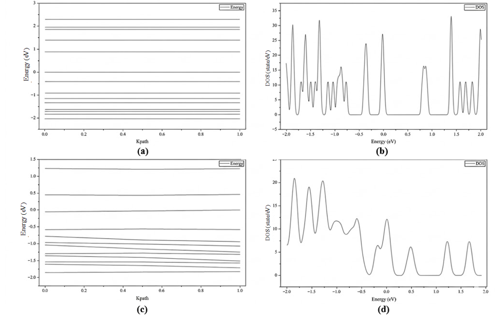
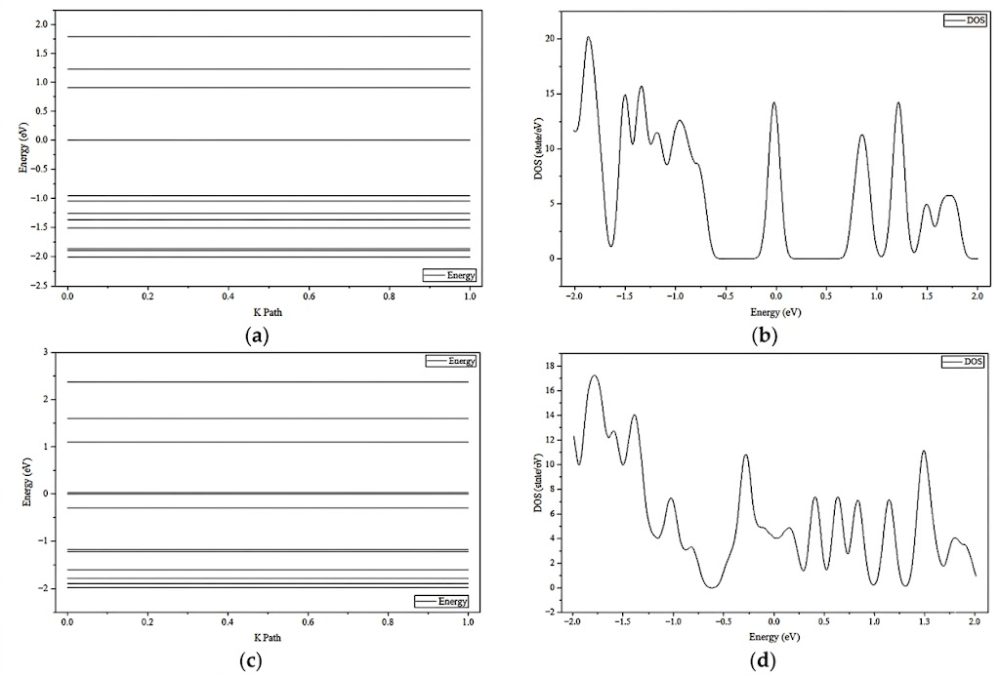
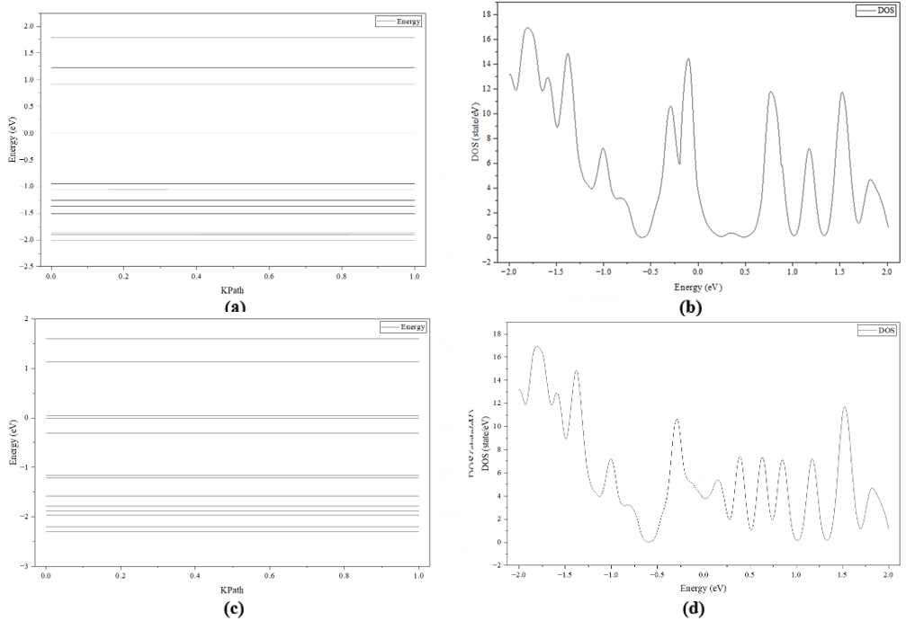
Arrows in the captions read PBE → Grimme. They compare calculated values, not a time-dependent transition or an experimental improvement.
05 / REFLECTION & SOURCE RECORD
Connecting structures, settings and evidence.
What I practised
Constructing atomistic models, setting up geometry optimisation and electronic-property calculations, comparing dispersion treatments, and tracing numerical results back to band structures and DOS plots.
The project strengthened my ability to organise a computational comparison and communicate both the observed trends and the settings behind them.
What needs further validation
Independent benchmarks and systematic convergence checks would be needed to establish quantitative accuracy. The thesis discusses local interactions and edge reconstruction as possible explanations; the reported gaps alone do not prove a unique microscopic mechanism or device-level performance.
A reproducible extension would preserve the complete input/output files and test the sensitivity to sampling, spin settings and the precise dispersion implementation.
Based on my thesis and final presentation
Effect of vdW correction on the electronic properties of pentagonal PdSe₂ — Ruizhe Xu, DUT–Leicester International Institute, 2026. Thesis completion date: 16 May 2026; presentation cover date: 23 May 2026.
The atomic models and electronic plots on this page are original embedded figures from the supplied presentation, checked against thesis Chapters 3–4. The gap table reproduces thesis Table 4.1. The decorative cover is a concept illustration and is not an exact crystal structure.
Notes on source labels
Some ribbon-width suffixes vary between the thesis text, model illustrations and DOS captions. The overview therefore uses the consistent edge-family names AA, ZZ, ZA and SS; the AA-3 gap example follows the explicit label in presentation slide 12. Original figure labels are preserved. Method names follow the reported PBE, Grimme and TS comparisons.
COMPUTATIONAL MATERIALS / RUIZHE XU